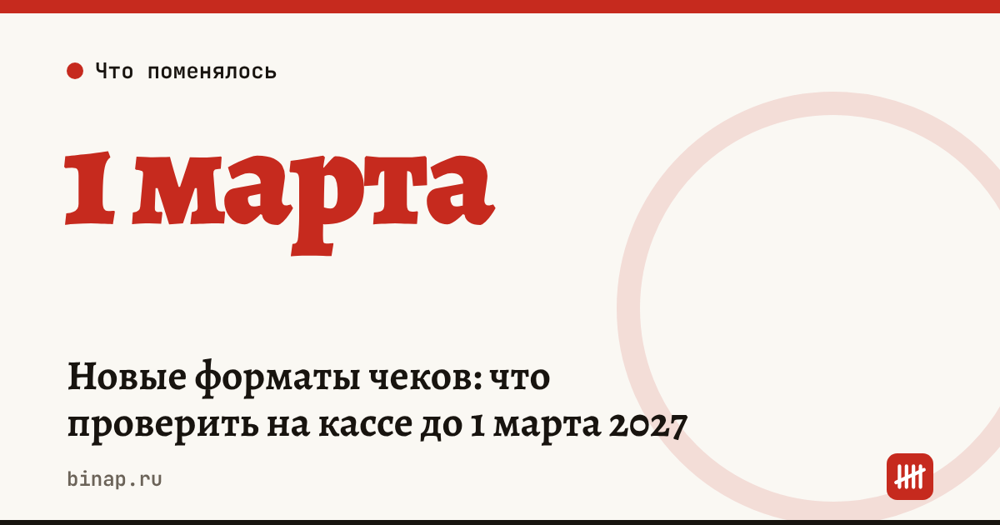

Новые форматы чеков: что проверить на кассе до 1 марта 2027

Касса должна соответствовать новым форматам чеков с 1 марта 2027 года, а форматы фискальных данных 1.05 и 1.1 перестанут действовать с 1 сентября 2027 года. Проверьте версию формата на каждой кассе заранее — особенно если у вас несколько точек, интернет-магазин или маркированный товар.
Коротко
- По сообщению ФНС от 03.11.2026, Минюст зарегистрировал приказ ФНС от 04.09.2026 № ЕД-1-20/658@ о форматах фискальных документов.
- С 1 марта 2027 года: тег 1127 для дистанционной продажи маркированного товара, «АУСН доход» и «АУСН доход минус расход» в списке систем налогообложения, обязательный тег 1234 при безналичной оплате.
- С 1 сентября 2027 года форматы 1.05 и 1.1 исключаются.
- ФНС советует заранее проверить кассу и программу — не ждать последней недели.
Сроки, изменения и разборы для ИП и самозанятых — каждое утро в Telegram и MAX. Подпишитесь, чтобы не пропустить.
Что меняется и когда
| Срок | Что меняется | Кого касается |
|---|---|---|
| 1 марта 2027 | тег 1127 «дистанционный способ продажи» маркированного товара | продающих маркировку онлайн и с доставкой |
| 1 марта 2027 | «АУСН доход» и «АУСН доход минус расход» в чеке | ИП и ООО на АУСН |
| 1 марта 2027 | тег 1234 обязателен при безналичной оплате | всех, кто принимает карты и QR |
| 1 сентября 2027 | отмена форматов 1.05 и 1.1 | всех, у кого касса на старой версии |
Смешанная оплата: где искать безналичную сумму
По разбору эксперта «Клерка»: покупка на 3 000 ₽, из них 1 000 ₽ наличными и 2 000 ₽ картой. Безналичную часть ищут в теге 1081 и сверяют с операцией эквайринга, а не с банковской выпиской: в выписке сумма приходит уже за вычетом комиссии банка и не совпадёт с чеком.
Что сделать сейчас
- Составьте таблицу касс. По каждой точке: модель кассы, фискальный накопитель, версия прошивки и формат — включая интернет-магазин и резервные кассы. Расчёт редакции: пять точек — пять проверок, таблица экономит время и сервисному инженеру.
- Запросите ответ у обслуживающей организации письменно: хватит обновления программы или нужна замена накопителя или кассы.
- Не оставляйте кассы на 1.05 и 1.1 после 1 сентября 2027 года.
- Если предлагают менять оборудование, попросите причину по каждой кассе и сравните с обновлением прошивки.
- Если вы на АУСН, проверьте, что после обновления касса правильно указывает систему налогообложения в чеке.
Как выбирать эквайринг и считать его реальную стоимость — в разборе эквайринг для ИП: как сравнить тарифы. Что будет при ошибках в маркировке — в статье штрафы за просрочку маркировки.
Частые вопросы
Что меняется с 1 марта 2027 года? Новые реквизиты чека: тег 1127 для дистанционной продажи маркированного товара, АУСН в списке систем налогообложения и обязательный тег 1234 при безналичной оплате.
Что отменяют с 1 сентября 2027 года? Форматы фискальных данных версий 1.05 и 1.1.
Нужно ли покупать новую кассу? Не обязательно: часто хватает обновления прошивки. Решение — по ответу обслуживающей организации для каждой конкретной кассы.
Дату вступления в силу сверяем с сообщением ФНС; текст приказа на портале правовой информации мы не открывали.